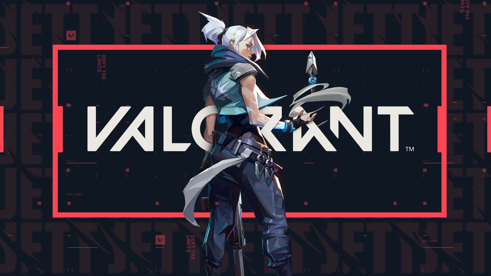

Nama : Muhammad Shidiq Ramadhan Hidayatulloh
NIM : 10123252
Kelas : IF-6
Role : Duelist
Biografi
Mewakili negara asalnya, Korea Selatan, gaya bertarung Jett yang tangkas dengan banyak pengelakan memungkinkannya mengambil risiko yang tak bisa dilakukan orang lain. Dia mengitari tiap pertempuran, menebas musuh sebelum mereka menyadari apa yang terjadi.
Q : Updraft

Dengan menggunakan skill ini Jett akan terbang tinggi ke udara. Skill ini biasanya digunakan untuk mengambil highground dengan cara menaiki objek dan menyerang lawan dari bagian atas.
E : Tailwind
AKTIFKAN untuk menyiapkan embusan angin selama beberapa saat. GUNAKAN KEMBALI angin untuk melempar Jett ke arah dia bergerak. Jika Jett berdiri diam, dia akan terlempar ke depan. Charge Tailwind direset tiap dua kill.
C : Cloudburst

Melempar proyektil yang membesar menjadi awan penghalang pandangan singkat saat membentur permukaan. TAHAN tombol skill (C) untuk membelokkan asap ke arah penanda sasaranmu.
X : Bladestorm
SIAGAKAN satu set pisau lempar akurasi tinggi. TEMBAK untuk melempar satu pisau dan recharge pisau saat melakukan kill. KLIK KANAN untuk melempar semua belati, tetapi tidak recharge saat melakukan kill.
Assault Rifle

Salah satu senjata serba guna terbaik di VALORANT, senjata ini paling efektif dalam menyerang target individu dalam jarak yang lebih jauh, sehingga dapat membunuh musuh mana pun dengan satu peluru jika mengenai kepala sejauh apapun.
Sniper Rifle

Operator adalah senjata bervalue tinggi sekaligus senjata termahal di dalam game. Sebagai senjata sniper, senjata ini memiliki scope dengan dua pengaturan zoom pada mode klik kanan-nya yang memiliki akurasi sempurna saat diam. Sebaliknya, akurasi tembakan Utama (NoScope) Operator sangat tidak akurat.